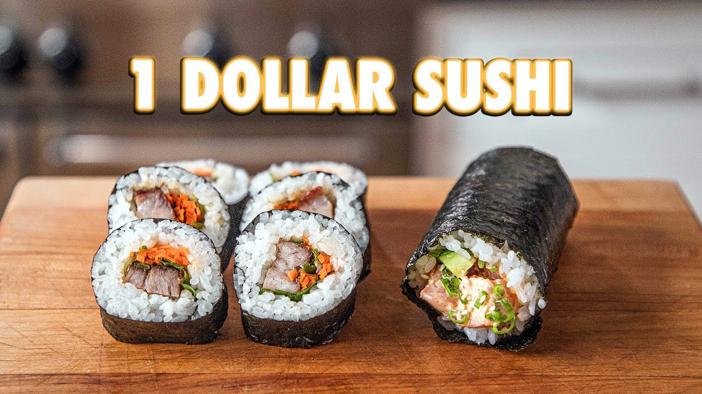

Copy Cat Josh Wies Sushi Recipe 3 Ways
Sushi is commonly one of the most amazing yet expensive items on a menu. BUT if you make it at home using these instructions, I think you can shave it down to around 1 dollar per serving.
Main Ingredients
- Fried Shallots
- 3 shallots thinly sliced
- 2 cups of vegetable oil
- Herb Salad
- 1/4 cup of fresh mint
- 1/4 cup fresh cilantro
- 1/4 cup of fresh thai basil
- Pickled Carrot
- 2 carrots julienned
- 1 cup water
- 2 cups vinegar
- 1 tablespoon salt
- 2 teaspoons sugar
- Sushi Rice
- 2 cups of sushi rice
- 2 cups of water
- 1/4 cup of zu (plus more to taste)
- Zu
- 1 cup rice vinegar
- Kombu
- 3 Tbsp sugar
- 1 TBsp salt
- Vegetable Temaki
- 1 avocado cut into quarters
- Fried shallots
- 2 portobello mushrooms
- salt to taste
- Herb Salad
- 1 cucumber cut into sticks
- 1/4 cup soy sauce
- Spicy Salmon Temaki
- 1/2 lb sashimi-grade salmon
- 1/3 cup mayo
- 3 Tbsp sriracha
- 1 green onion, thinly sliced
- salt to taste
- 1 close garlic grated
- 1/4 cup sesame seeds
- Pork Belly Makimono
- 2 lbs Pork Belly
- salt to taste
- 1/2 cup hoisin sauce
- pickled carrot
- herb salad
- 2 thai chilies
- 1 bunch green onions
Steps
Sushi Rice
- Start by adding sushi rice to a strainer then washing thoroughly with water. Add to the rice cooker with equal parts water. Season with sushi zu.
- Place rice back into the rice cooker on “keep warm” setting.
Spicy Salmon Temaki Method
- Start by thinly slicing the shallots and place into a pot with vegetable oil. Set over a stove set to medium-high.
- Constantly stir, the oil will come up to a boil, and once the shallots are golden brown immediately remove. Drain on a paper towel and season with salt.
- Cut a nori in half, as well as an english cucumber (cut same length as nori), and cut the cheeks off the cucumber leaving the core behind.
- Take the cucumber cheeks and cut into batons.
- Using a sharp knife, cut the salmon into ½” cubes.
- In a separate bowl, combine mayonnaise, sriracha, green onion, salt to taste, and grated garlic clove. Mix together before adding in the salmon and toss to coat.
- Take a sheet of nori, cut into two halves. Repeat to have 8-10 sheets.
- Take on ½ sheet, and using dampened hands spread enough sushi rice to cover ¾ of the nori sheet.
- Spoon on 2-3 Tbsp of the spicy salmon, 1 cucumber baton, crispy shallots, sesame seeds and roll it up from the bottom
Additional Recipes